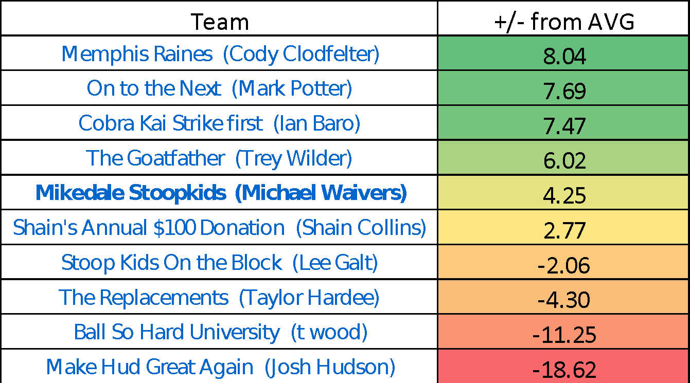
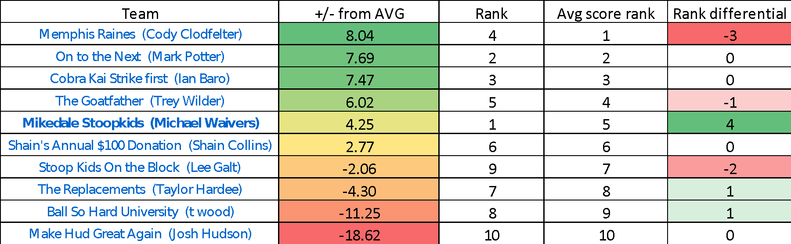
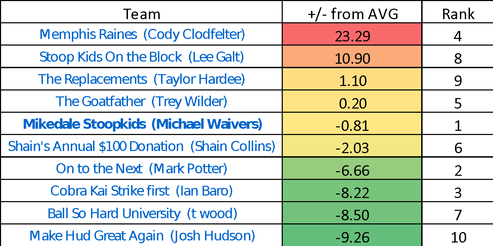
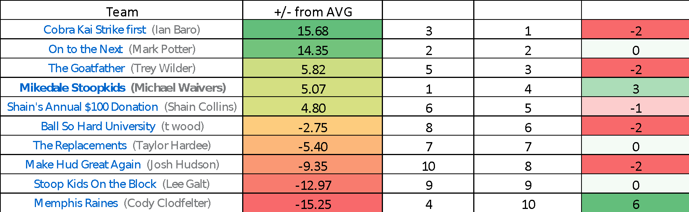

6 weeks in and season half complete. I wanted to look at some of the statistical trends of our first half for fun while I sit here in my 4-hour safety compliance training.
Everyone here knows the most important statistic of all: WINS. And your boy Waivers leads that particular category, and Jhud is losing that one. But often I hear people whine and complain about how they are better than their record indicates, so I want to take a deep dive into that to either validate, or shit all over those complaints. So we will look at 5 additional derived stats, that I have compiled.
- Points scored average point differential from league weekly average
- Points against average differential from league weekly average
- Weekly differential average
- Current rank vs. expected rank differential
- Team name rankings

These are the rankings of your average points scored vs. the weekly league average of 113.68. For example, my team scored 117.93 points per week, which is 4.25 points greater than the average of 113.68. Biggest takeaway here is how bad JHud’s team is. Just listen.
JHUD scores 18.62 less points than average every week than league average.
Ezekiel Elliot averages 18 per game,
SO, if every game, you added Ezekiel Eliot to JHUD’s team in addition to his entire roster he would STILL be below league average. Damn.
Also, Cody’s team has been the best so far this year, but he only has a 3-3 record, which is an anomaly, and we will dig into that later. So now if only take points scored into account, and not points scored against, this is how we would expect rankings should be.

To make things simple for you fools, the column all the way to the right shows the differential of current rank vs expected rank based on points scored. Poor Cody should be number 1, but he is number 4 and therefor has a -3 rank differential. Your boy Waivers, does not deserve the number 1 spot, but has been gifted it by the fantasy gods due to being such a great friend to everyone in the fantasy league. Karma does exist. And if you DON’T believe in Karma, wait until you see these next stats.
These are the average weekly points scored AGAINST a team vs. league average.

Number 1 takeaway here is the gods hate Cody, and he probably deserves it. Karma. 23.29 points more scored against Cody every week. That is insane. Even crazier, JHUD has the LEAST points scored against him weekly, and somehow is still clearly in last. WOW.
This last chart details your average points for against the league average taken from your average points against compared to league average, to do determine where your team should actually be in the rankings. I know Cody is feeling like yea, he should be number one due to points scored, but no he should not be because the fantasy gods hate him for Karma reason. He should technically be in last.

Even though Cody has scored the most, he has had so many points scored against him, he should statistically be in last. He is a whopping 6 ranks higher than he should be.
Also here are updated team name rankings.
Tier 1
Mikedale Stoopkids
Cobra Kai Strike First – badass name
Tier 2
Stoop Kids On the Block
The Replacements
Memphis Raines
Tier 3
The Goatfather
Ball So Hard University
Tier 4
On to the Next
Make Hud Great Again – how hard would it have been to make it “Keep Hud Great Again”
Shain’s Annual $100 Dollar Donation – Trey made a great point, you fucking got your money back last year.